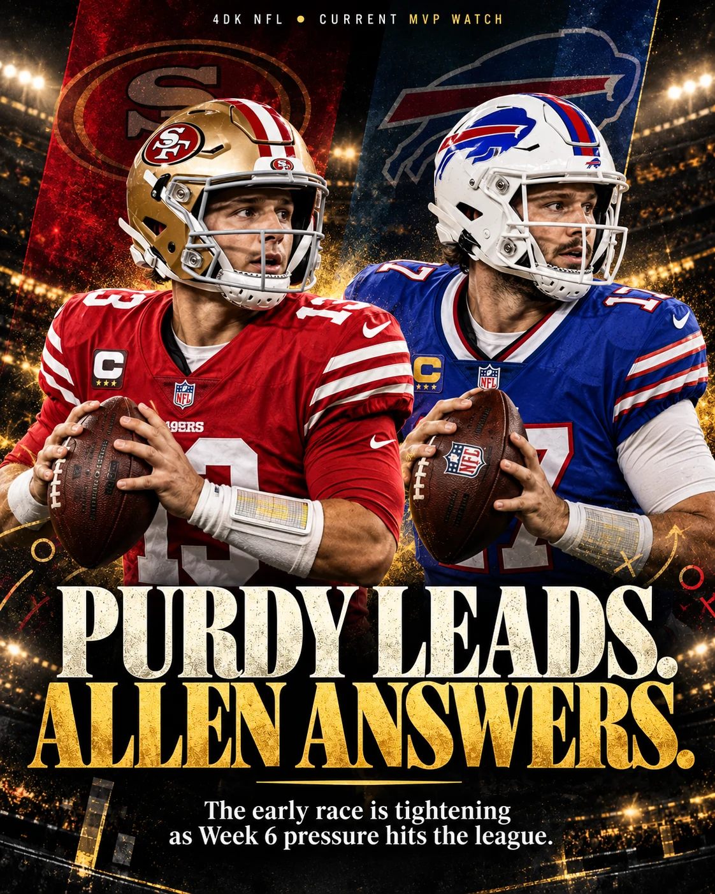

Purdy keeps the top slot. Allen made a Monday-night case. Mahomes returns from the bye unbeaten. This is our editorial ballot through five completed weeks—not betting odds.
BY 4 DA KULTURE • OCTOBER 15, 2026 • ENTERING WEEK 6

4 DA KULTURE • THE WEEK 6 EDITORIAL COVER
NO. 1BROCK PURDY
BIGGEST CHALLENGERJOSH ALLEN
FAST RISERDRAKE MAYE
WILDCARDJAHMYR GIBBS
THE 4DK STANDARD
PRODUCTION. WINNING. CONTEXT.
A quarterback should not climb this board just because his team won, and a player on a losing team should not be disqualified for producing. Our ballot balances efficiency, game control, fourth-quarter responsibility, supporting cast, availability, record and the eye test. It is an opinionated weekly snapshot; movement follows the results, not the hype.
POST-WEEK 5 • THE BALLOT
THE TOP TEN
01
Brock Purdy
QB • San Francisco 49ers • 5–0
The numbers alone don’t capture the finish. Purdy repeatedly leaned on Mike Evans to rescue drives and then led San Francisco past Seattle in the fourth quarter. His ability to keep the 49ers undefeated while making pressure decisions is why he stays No. 1 on our editorial ballot. We also need to see how this offense holds up physically as the season gets longer.
189 passing yards, 2 TD, 1 INT in Week 5
02
Josh Allen
QB • Buffalo Bills • 4–1
The Monday overtime win is an MVP moment: Josh Allen withstood an elite quarterback on the other sideline and became the solution when Buffalo needed one. A 37–34 win over the Rams is stronger evidence than empty passing totals. We still want more efficiency on possessions that should have ended sooner.
210 passing yards • 121 rushing yards vs Rams
03
Patrick Mahomes
QB • Kansas City Chiefs • 4–0
A week off is not grounds for a drop from the elite tier. Kansas City has a dangerous rushing complement in Kenneth Walker III and a quarterback who changes how defenses align. The Chargers matchup will reveal whether the Chiefs come out sharp after the bye.
Week 5 bye • unbeaten entering Week 6
04
Trevor Lawrence
QB • Jacksonville Jaguars • 4–1
The 57-yard walk-off kick in London will get headlines, but Lawrence’s passing performance made the winning position possible. With Jacksonville 4–1, the argument is no longer just that he has talent—it’s that the Jaguars are beating quality opponents.
331 passing yards • 2 touchdowns at Philadelphia
05
Drake Maye
QB • New England Patriots • 3–2
A five-touchdown statement in a 45–17 win is how a quarterback forces his name back into a conversation. Maye’s early-season consistency needs improvement, but this is a real upward trajectory, not a single fantasy box score.
4 passing TD • 1 rushing TD vs Las Vegas
06
Jared Goff
QB • Detroit Lions • 3–2
Detroit’s record is not immaculate, but Goff has executed with outstanding ball security and timing. Another three passing touchdowns against Arizona continued a start that may be undervalued because Gibbs draws so much attention.
12 passing TD • 0 turnovers through Week 5
07
Joe Burrow
QB • Cincinnati Bengals • 3–2
The Bengals need elite Burrow every week to cover for the areas where the roster still bends. Four touchdowns in Week 5 put him right back in the discussion; now we want sustained wins and clean fourth quarters.
4 passing touchdowns vs Miami
08
Kenneth Walker III
RB • Kansas City Chiefs • 4–0
Walker is our strongest early non-quarterback argument from the AFC. Adding this kind of explosive, tackle-breaking ground game to Mahomes changes what opposing coordinators can remove from Kansas City’s offense. The bye should not erase the impact he already built.
587 rushing yards through first four games
09
Jahmyr Gibbs
RB • Detroit Lions • 3–2
We know quarterbacks dominate MVP voting, but Gibbs is a reason Detroit can erase bad game scripts in a hurry. His 207 total yards against Arizona underline the every-down stress he creates. The candidacy rises if Detroit keeps winning.
151 rushing yards • 2 rush TD vs Arizona
10
Justin Jefferson
WR • Minnesota Vikings • 5–0
Minnesota got Jefferson back involved, and the offense finally looked more balanced alongside Aaron Jones and Kyler Murray. He is a long-shot MVP entry, but the way his presence unlocks the scheme deserves attention while the Vikings are undefeated.
6 catches • 79 yards • 1 TD vs New Orleans
THE QUESTIONS
WHO CAN STAY HERE?
49ERS
CAN PURDY SUSTAIN IT?
Five wins buy respect; keeping this offense intact through a 17-game schedule is the larger test. We want to see San Francisco manage CMC’s workload, keep Evans healthy and keep moving the chains after explosive opportunities close.
CHIEFS
IS WALKER A TRUE MVP WILDCARD?
He was one of the most disruptive early-season runners before the bye. If Kansas City continues to dominate with him and Mahomes sharing the burden, Walker deserves more than ceremonial recognition.
BILLS
IS ALLEN BACK TO HIS BEST?
The Rams game was enormous, but we’re grading full games, not highlight drives. Allen can own this race if Buffalo strings together authoritative performances rather than exhausting escapes.
VIKINGS
WHO GETS THE CREDIT?
Minnesota is 5–0, but its early identity runs through Brian Flores’ defense, coaching, its kicking game and a more settled Kyler Murray. That makes Jefferson’s individual MVP case harder, even while the team deserves top-three treatment.
This is the 4DK ballot entering Week 6, updated October 15. Lamar Jackson’s ankle injury and missed Week 5 game affect his availability case; that is not a judgment about his ability. Our Week 5 ballot stays in the archive below.